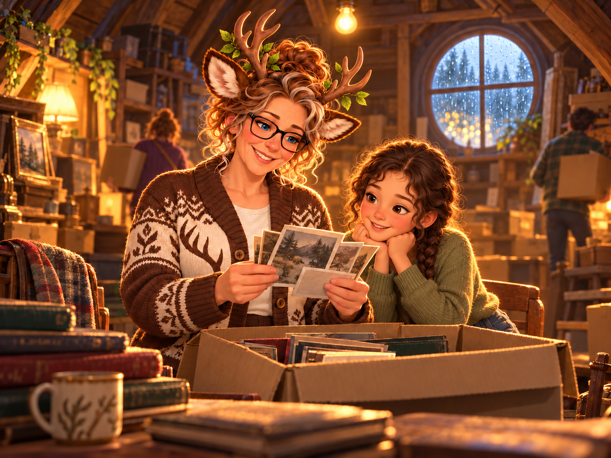
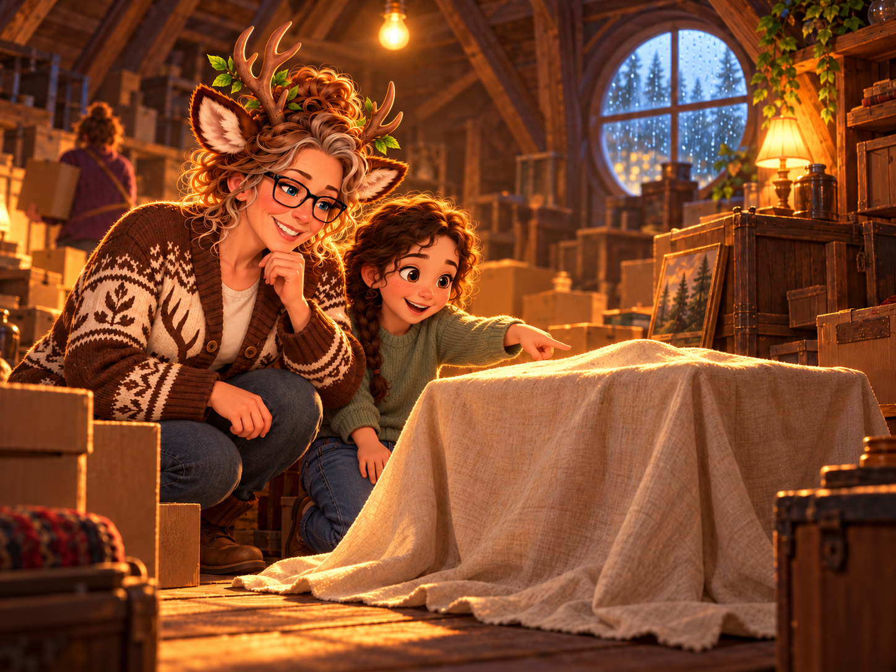
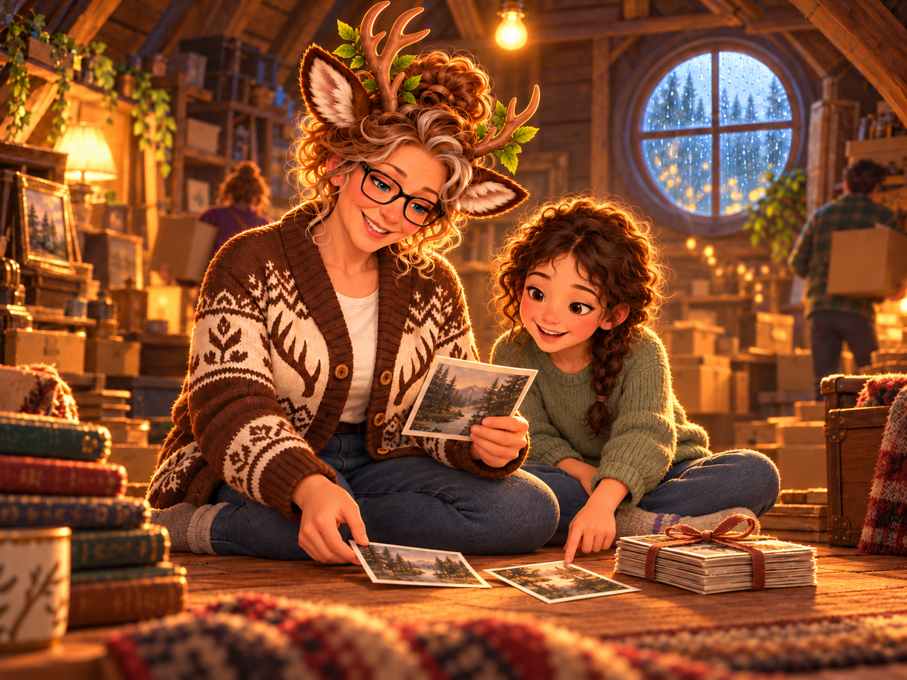
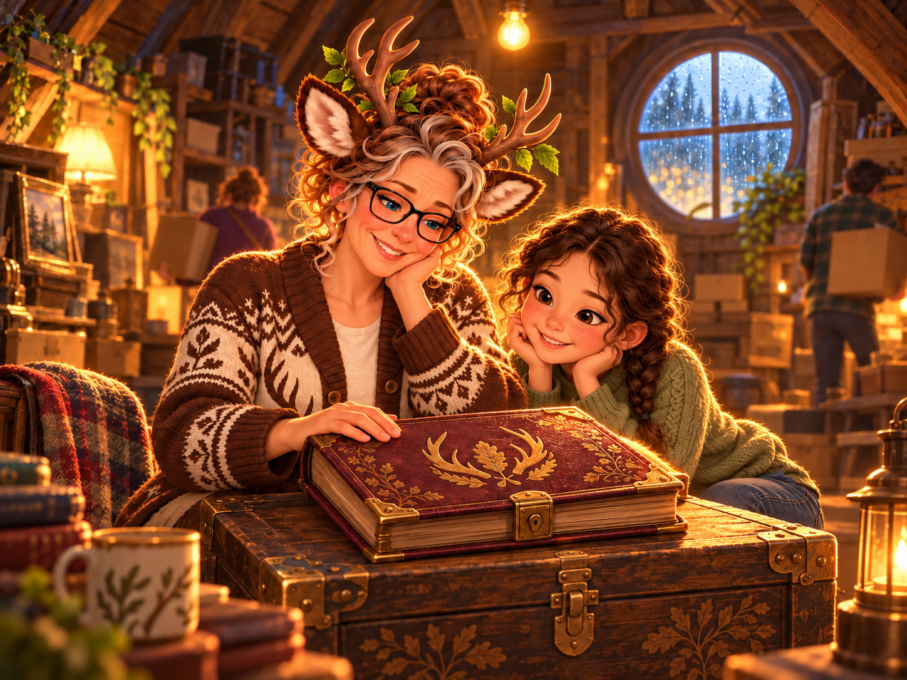

Revised cast: Alisha and her granddaughter. Fiona appears only in the photograph and memory. Six revised drafts await review. Existing closing images are shown for sequence context. Click new art for full resolution.



